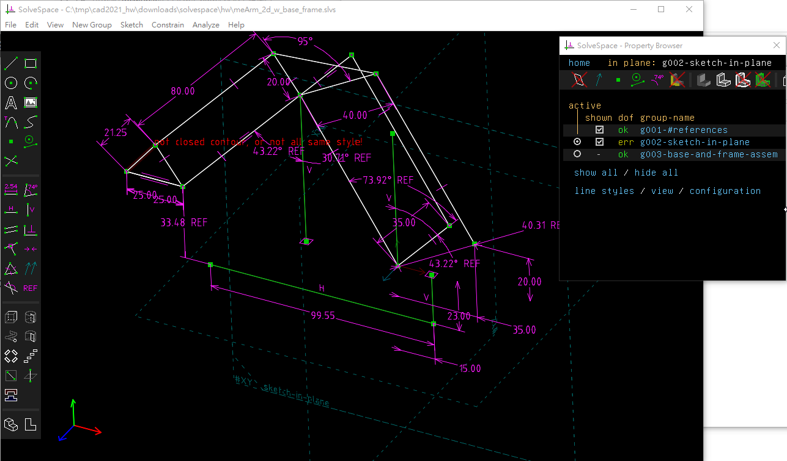
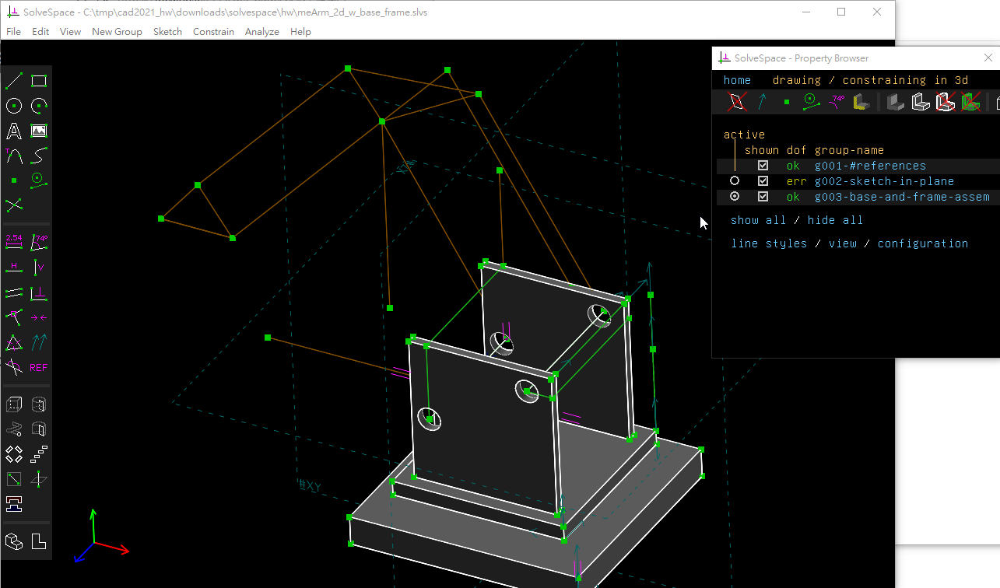

HW1 <<
Previous Next >> CAD1 安裝配置
CAD1 繪圖
CAD1 指各學員所分配到的第一套參數式 CAD 套件, 其中包括 Solidworks, Inventor, NX, Onshape 與 Solvespace.
CAD1 將使用 Solvespace 執行零件繪圖.
有關 Solvespace
2013.06 Solvespace 1.9 移除限制, 轉為 Freeware.
2013.09 Solvespace 2.0 提供下載原始碼. 轉為 GPLv3 free software.
2013.12 Solvespace 2.0 正式宣布轉為 GPL free software.
從 https://solvespace.com/forum.pl?action=viewall 列出從 2013.09 Forum 啟用後的所有討論串.
Solvespace 原始碼: https://github.com/solvespace/solvespace
編譯 Solvespace
在 Windows 10 64 位元環境中編譯 Solvespace, 可以下載 compile_copsim_for_pj2022.7z (檔案大小 4 GB, 解開壓縮後 14 GB) 後啟動可攜程式系統. 以 git clone --recurse-submodules https://github.com/solvespace/solvespace.git 取得原始碼.
cd solvespace 後以 mkdir build 建立 build 目錄, 然後 cd build 進入 build 目錄. 先執行:
cmake .. -G "MinGW Makefiles" -DCMAKE_BUILD_TYPE=Release
接著再執行:
mingw32-make
就可以完成 solvespace.exe 的編譯.
執行這裡利用 MSYS2 所編譯的 solvespace.exe, 必須從 Y:\msys64_20210419\mingw64\bin 目錄複製 libwinpthread-1.dll 檔案, 與 solvespace.exe 放在同一目錄中, 就可以啟動 solvespace.exe.
以 MSYS2 編譯 Solvespace 的 log 請參考: compile_solvespace_log.txt
初步 2D 機構分析與基座組立


上列 2D 機構分析與零組件下載: hw1_solvespace_stage1.7z
HW1 <<
Previous Next >> CAD1 安裝配置